好。，那第二個部分要講的是會比較偏向這個。，這個。，。，嗯。，如何把這個工作流轉換成這個。，所謂的。
好。
好。，。，好像好像好像好像好像好像好像好像好像好像好像好像好像好像好像好像好像好像好像好像好像好像好像好像好像好像好像好像好像好像好像好像好像好像好像好像好像好像好像好像好像好像好像好像好像好像好像好像好像好像好像好像好像好像好像好像好像好像好像好像好像好像好像好像好像好像好像好像好像好像好像好像好像好像好像好像好像好像好像好像好像好像好像好像好像好像好像好像好像好像好像好像好像好像好像好像好像好像好像好像好像好像好像好像好像好像好像好像好像好像好像好像好像好像好像好像好像好像好像好像好像好像好像好像好像好像好像好像好像好像好像好像好像好像好像好像好像好像好像好像好像好像好像好像好像好像好像好像好像好像好像好像好像好像好像好像好像好像好像好像好像好像好像好像好像好像好像好像好像好像好像好像好像好像好像好像好像好像好像好像好像好像好像好像好像好像好像好像好像好像好像好像好像好像好像好像好像好像好像好像好像好像好像好像好像好像好像好像好像好像好像好像好像好像好像好像好像好像好像好像好像。
好像好像好像好像好像好像好像好像好像好像好像好像好像好像好像好像好像好像好像好像好像好像好像好像好像好像好像好像好像好像好像好像好像好像好像好像好像好像好像好像好像好像好像好像好像好像好像好像好像好像好像好像好像好像好像好像好像好像好像好像好像好像好像好像好像好像好像好像好像好像好像好像好像好像好像好像好像好像好像好像好像好像好像好像好像好像好像好像好像好像好像好像好像好像好像好像好像好像好像好像好像好像好像好像好像好像好像好像好像好像好像好像好像好像好像好像好像好像好像好像好像好像好像好像好像好像好像好像好像好像好像好像好像好像好像好像好像好像好像好像好像好像好像好像好像好像好像好像好像好像好像好像好像好像好像好像好像好像好像好像好像好像好像好像好像好像好像好像好像好像好像好像好像好像好像好像好像好像好像好像好像好像好像好像好像好像好像好像好像好像好像好像好像好像好像好像好像好像好像好像好像好像好像好像好像好像好像好像好像好像好像好像好像好像好像好像好像好像好像好像好像。
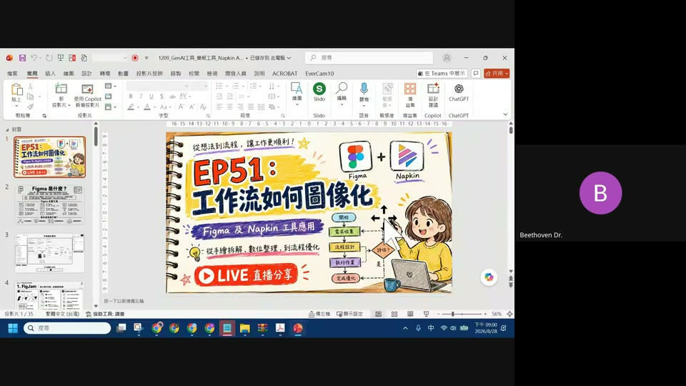
好像好像好像好像好像好像好像好像好像好像好像好像好像好像好像好像好像好像好像好像好像好像好像好像好像好像好像好像好像好像好像好像好像好像好像好像好像好像好像好像好像好像好像好像好像好像好像好像好像好像好像好像好像好像好像好像好像好像好像好像好像好像好像好像好像好像好像好像好像好像好像好像好像好像好像好像好像好像好像好像好像好像好像好像好像好像好像好像好像好像好像好像好像好像好像好像好像好像好像好像好像好像好像好像好像好像好像好像好像好像好像好像好像好像好像好像好像好像好像好像好像好像好像好像好像好像好像好像好像好像好像好像好像好像好像好像好像好像好像好像好像好像好像好像好像好像好像好像好像好像好像好像好像好像好像好像好像好像好像好像好像好像好像好像好像好像好像好像好像好像好像好像好像好像好像好像好像好像好像好像好像好像好像好像好像好像好像好像好像好像好像好像好像好像好像好像好像好像好像好像好像好像好像好像好像好像好像好像好像好像好像好像好像好像好像好像好像好像好像好像好像，那你往往就過去了。
那你往往就過去了，哇好像有這樣的功能，但是我剎那要把它轉移到我自己的工作流的時候會卡住，那通常我就會說，好那如果要上工作流沒問題，至少讓我講完我前面的這個生成式AI的運用的過程。
至少讓我講完我前面的這個生成式AI的運用的過程，就是那個再講他Lessending網絡啦，跟他的這個這個機器學習講完之後，我們就直接進入到工作流，那工作流這件事最好的方式，就是請大家拿出一張紙，那這張紙你就要去畫。
那這張紙你就要去畫，去畫出找一項你的工作，這項工作是你覺得最複雜，你覺得最繁雜耗費你最多時間的，好那這張工作出來之後你要做一件事情，你要去告訴我你的這個工作裡面。
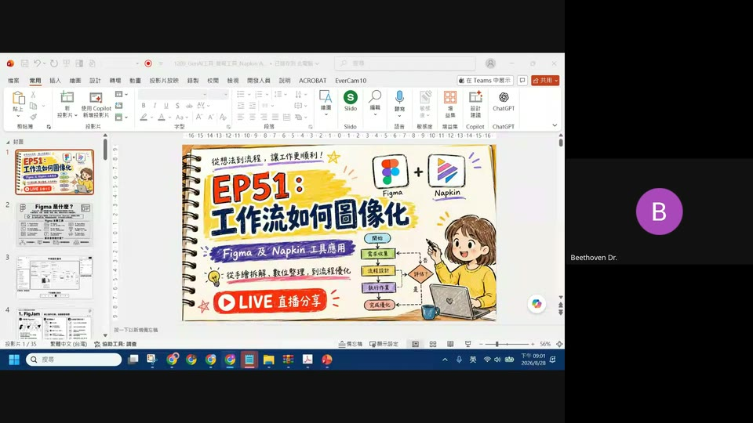
你要去告訴我你的這個工作裡面，的每一個節點是什麼事情，你每一個過程每一個階段，比如說我收到信我收到內容的時候，我要做相關的這個問題的時候要怎麼做。
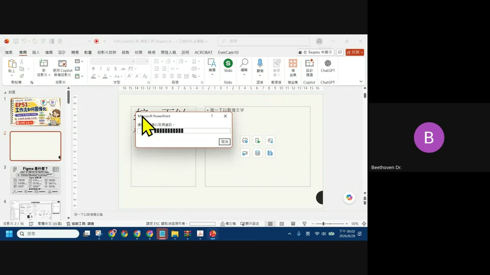
我要做相關的這個問題的時候要怎麼做，比如說，這樣好，好，比如說我收集到資料的時候第一件是第二件第三件第四件。
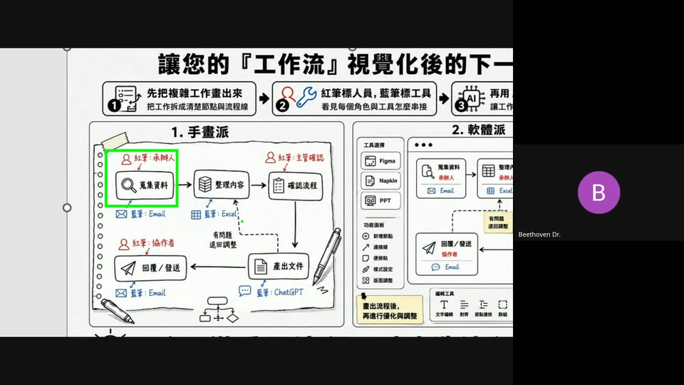
比如說我收集到資料的時候第一件是第二件第三件第四件，很多人就會用手畫，手畫我說如果你看手邊有藍筆跟紅筆，好那就請你告訴我這個人在裡面的角色是什麼，有沒有人，當然一定這個階段都現在都有人，藍筆就是你用了哪些工具你是用Outlook。
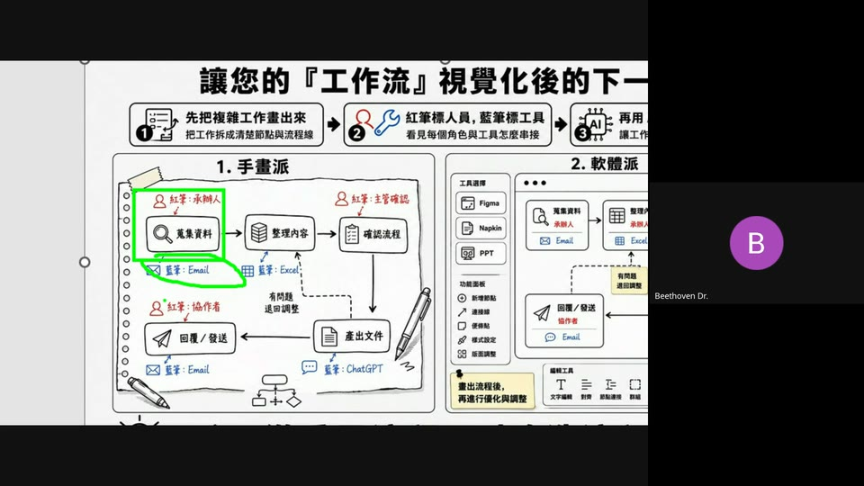
藍筆就是你用了哪些工具你是用Outlook，還是你用Gmail，還是你有其他的學校的網站，或者是收信的方式，好，你收完之後你用什麼整理，你要告訴我你用AI整理嗎，你用Google Sheet整理嗎，你用Excel整理嗎。
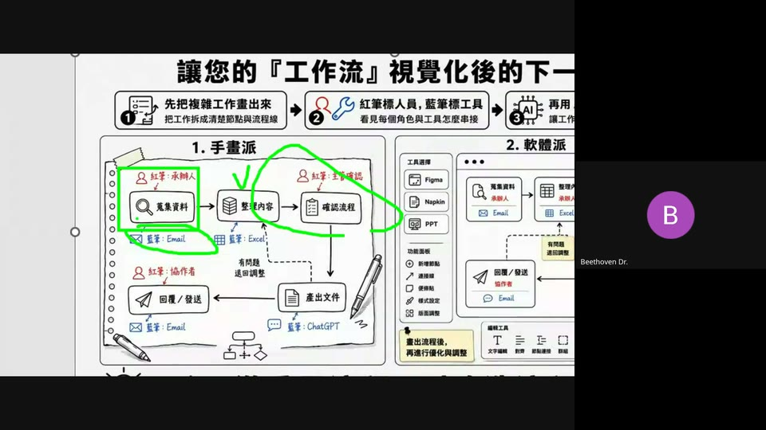
你用Excel整理嗎，你用Word還是你用Powpoint，還是你用記事本整理，還是你用Moddown整理，好你要告訴我，再來流程，接下來這件事要怎麼做，產出文件你是用什麼產，分析資料你是用什麼分析，好把整個流程劃過一遍之後。
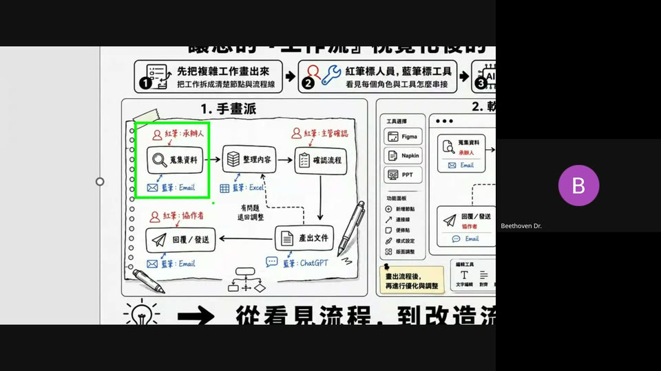
好把整個流程劃過一遍之後，我就開始來跟大家講說中間哪些你可以改善，比如說收集資料這件事情，你是一封一封從Email下載嗎，這時候我就告訴你說，好請Agent去你的Gmail或Outlook，把所有的Email內容下載成一個欄位在Excel。
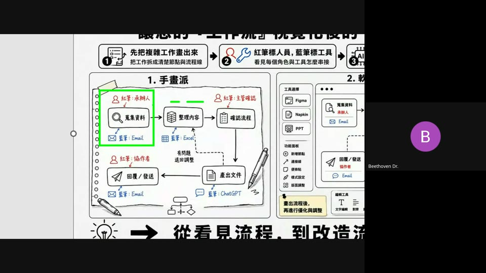
把所有的Email內容下載成一個欄位在Excel，然後後面把東西上傳到你的Google雲端，比如說他是這個，履歷好了，上傳到Google雲端給我網址。
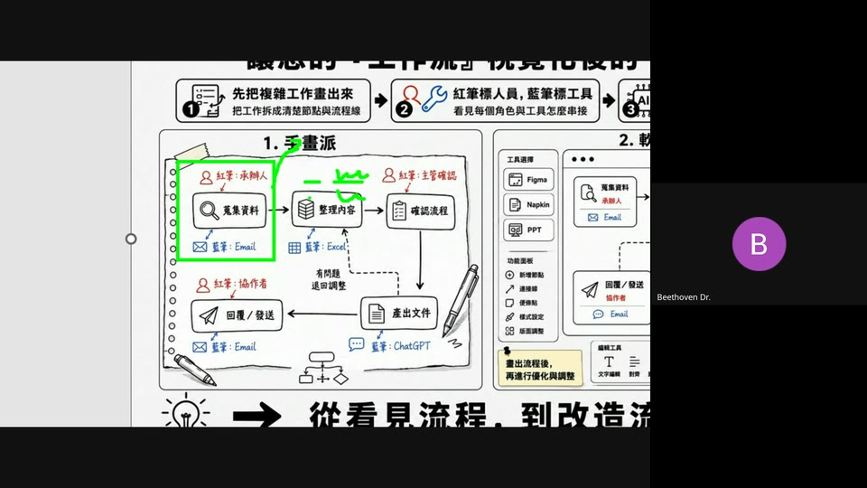
上傳到Google雲端給我網址，好那整理好你的Excel就不用自己整理，以前可能是你的左邊貼右邊貼，左邊佈置右邊貼，類似這樣會浪費時間，然後我就會告訴他中間這個階段，中間這個階段以前是你。
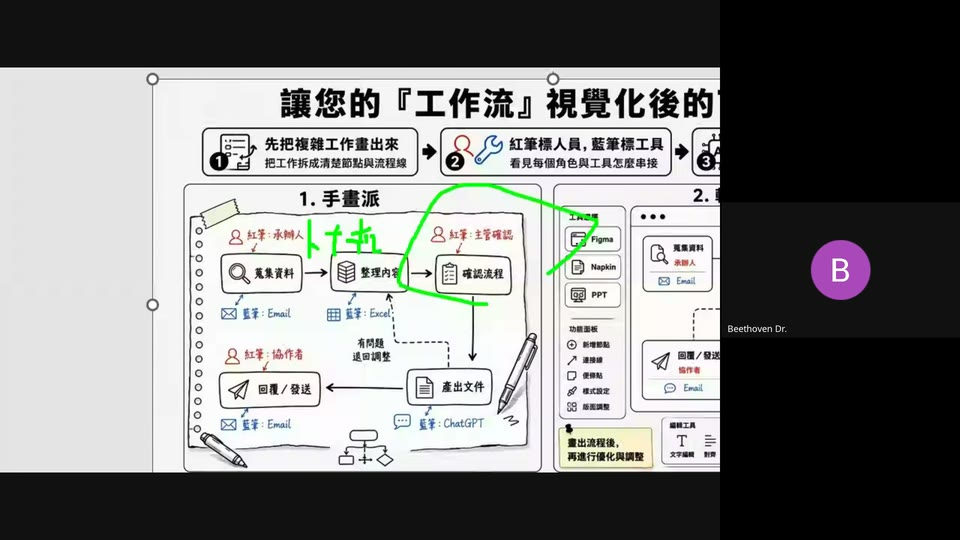
中間這個階段以前是你，現在人機協作，機器幫你做完你做查核你做檢核，好那到這邊給主管的時候，你是做完要再把這個Google信或這個Excel寄給主管，你是用什麼寄，是用Line寄呢，還是用Email寄呢。
還是用Email寄呢，還是要上傳到哪邊，好那中間Agent可不可以幫忙，或者是有哪些自動化的方式可以做，比如說GS，比如說Power Automate，或者是最近很流行按鍵精靈，就是大家如果以前有玩過那種。
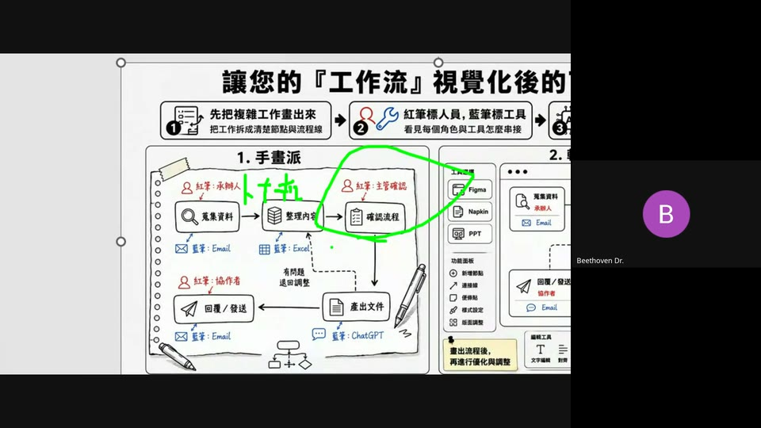
就是大家如果以前有玩過那種，線上遊戲，以前不是都會去買，他不太像是外掛，他就是自動練功，就是同一個點他就只按攻擊，然後沒學的時候他就會按補充學，類似這樣的功能，那些按鍵精靈現在因為突然AI可以幫你寫這些。
那些按鍵精靈現在因為突然AI可以幫你寫這些，按鍵精靈之後又突然捅起來，那開始就會有人把它動到說，我都固定上班的時候點Email過去去點，然後讓他寄什麼的，所以這也是一種自動化的一個做法。
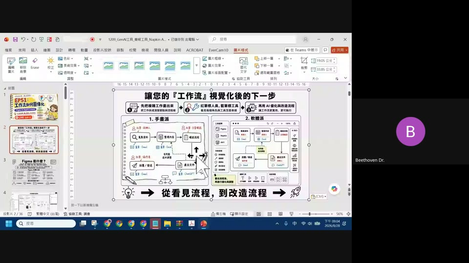
所以這也是一種自動化的一個做法，也有人會這樣做，每天早上10點，當然這樣不好，這樣會有點偽造，我說，如果你的公司是線上簽到的，他就每天早上10點打開你的Word，輸入你的帳號密碼之後，點選。
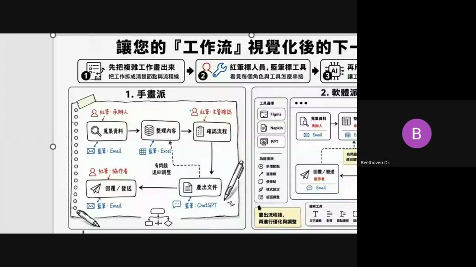
點選，然後點簽到，有人會這樣做，但是這樣是不合法的，我只跟大家講，好，那我繼續講，然後中間的過程，傳說就是，他們每一個階段我都要講說，這些可以導入什麼工具，你要做PPT，你的會整，然後你要摘什麼東西。
然後你要摘什麼東西，然後出來之後要做定稿，等等的，類似這樣，好，那這些工作流，早期大家都用手畫，畫完基本上就忘記了，除非有人拍照，那後來我就跟大家說，那如果，當然用手畫是最清楚，因為。
每一條線，每一個節點，你要非常的清楚，後面你才有，辦法詳細的去告訴我，你到底哪邊卡住了，你到底哪邊在導入流程的時後卡住，後來我就說，那我們換個方式。
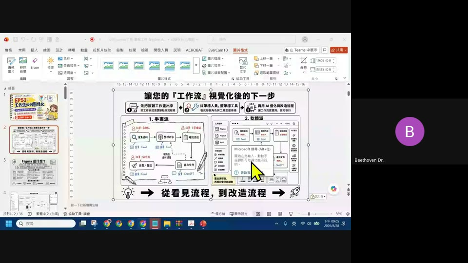
那我們換個方式，我們把時間節省下來，因為有時候在畫這個時候，畫太長了，這個時間，花太久了，所以我就會建議說，好，那我們用AI來畫吧，首先，我就告訴他，其實有很多工具可以用，手邊你們只要用最簡單的。
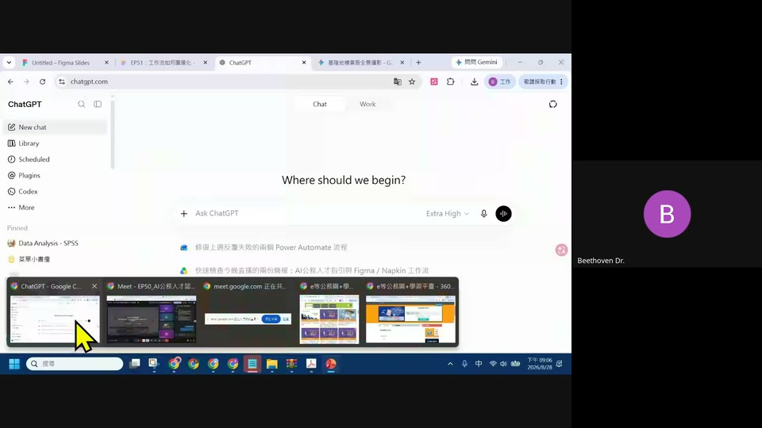
手邊你們只要用最簡單的，比如說好了，來，先講一個最簡單的，那個Jumera，的Notebook。
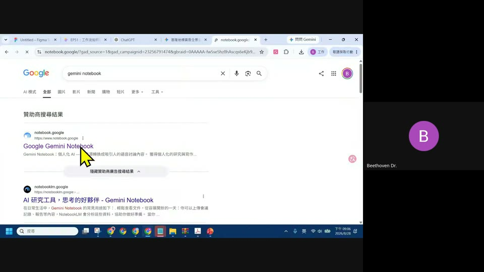
的Notebook，就是Notebook LM，他也可以做，好，那大家應該都知道他現在更新之後他可以寫程式，他可以幫你寫一個直接寫出來可以直接做使用的。
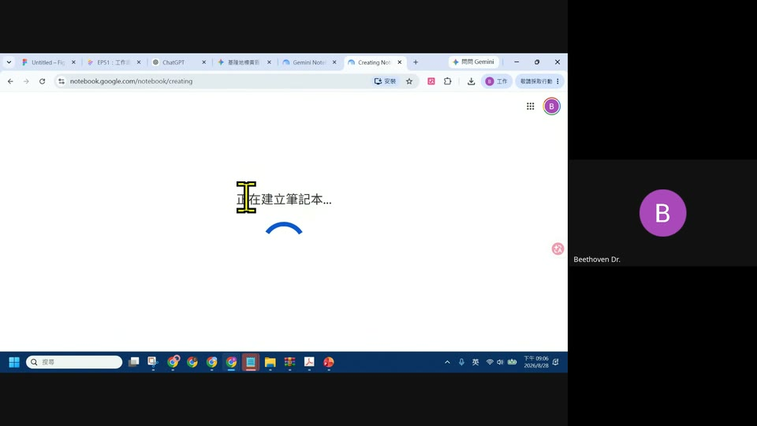
他可以幫你寫一個直接寫出來可以直接做使用的，比如說來示範上我等一下就是示範最簡單的邏輯就是我要寫一個報名網站，好。
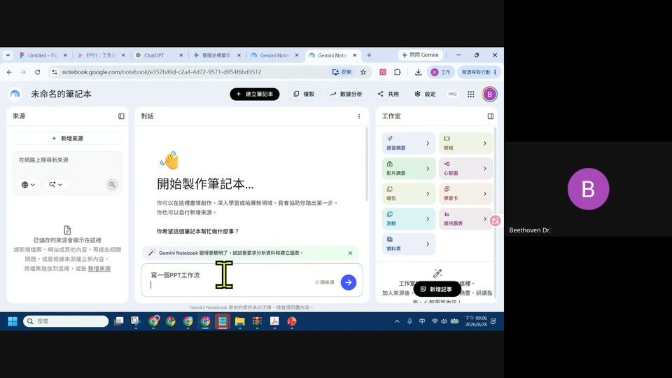
好，寫出一個PPT的工作流，然後裡麵包含了文字框加線頭跟線。
然後裡麵包含了文字框加線頭跟線，好，然後工作，我的製作，OK。
好，然後下一個要做什麼，告訴我，我的工作流就是，這個是一個報名網站，報名網站，這個工作流先給他，工作流是這樣，等一下我們都一樣的工作流就好了，用便宜的做法。
用便宜的做法，不要開agent，Google的Gimera，裡面的Canva的功能，Bas，寫出，報名網站。
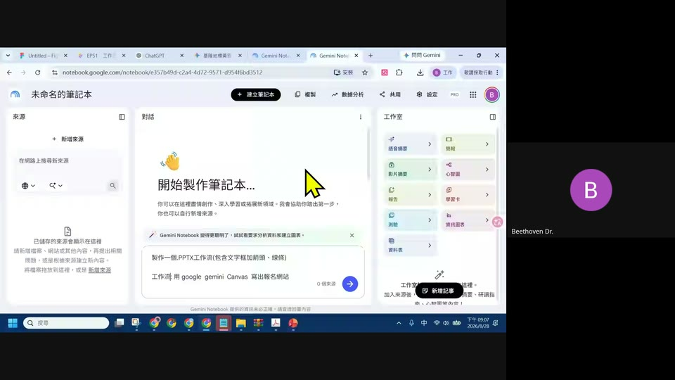
報名網站，好，然後這是第一個，等一下我們會重複使用這個，第二個，在網站中。
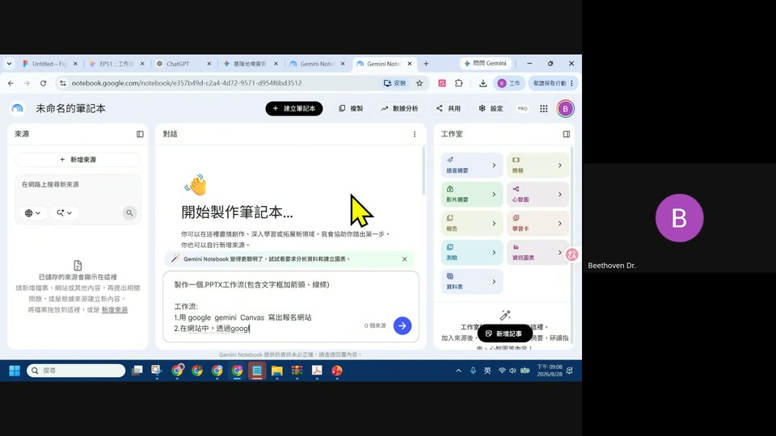
在網站中，透過，Google，App，Squid。
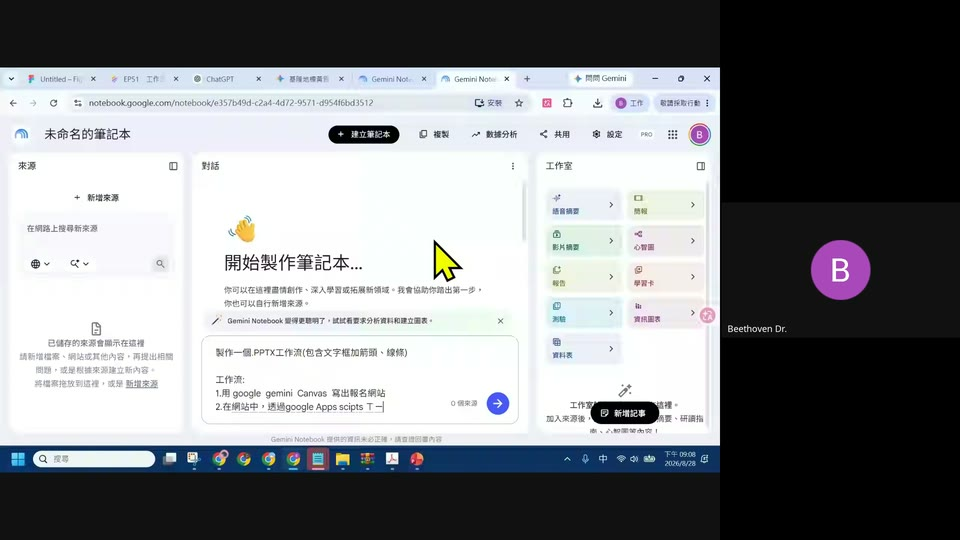
Squid，解除，自動化，將，報名，網站，填寫到。
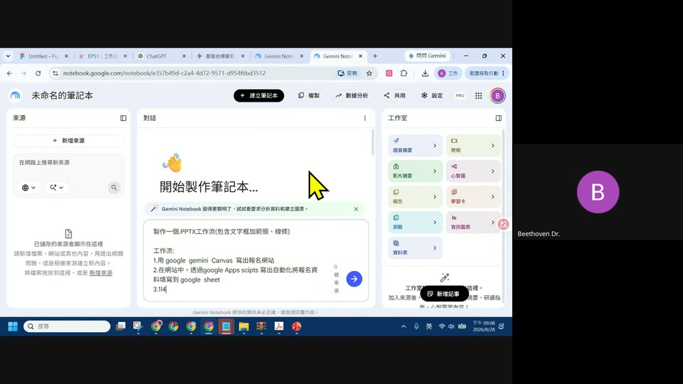
填寫到，Google，去，3，報名，截止日，後，將，報名錶。
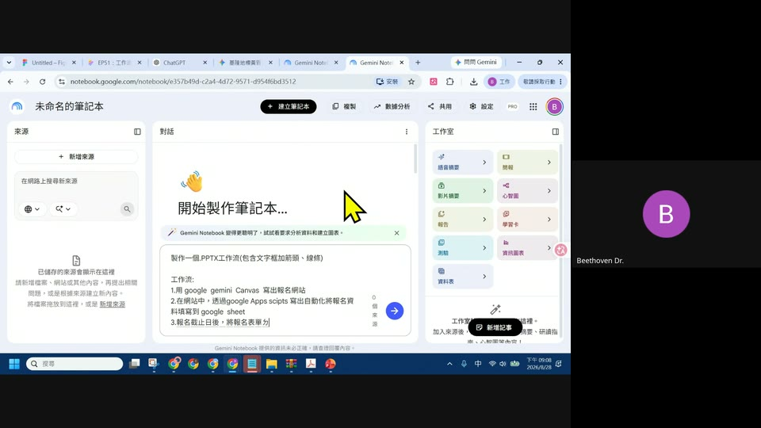
報名錶，找，寄送，的，到，好，最簡單的這個自動化。
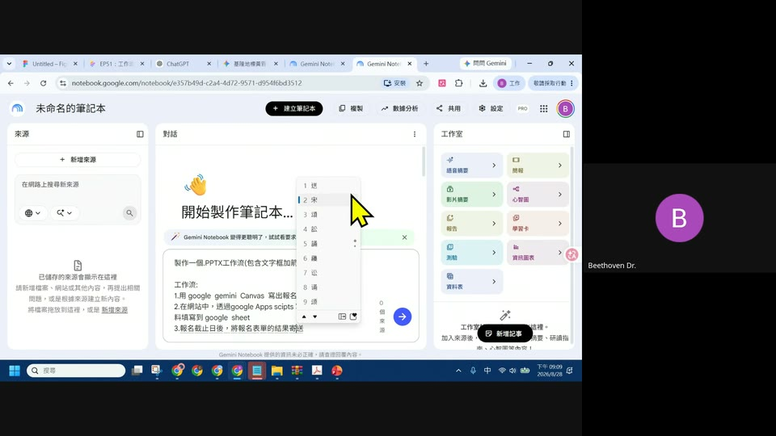
最簡單的這個自動化，好最簡單的這個自動化就是我想要知道我假設辦了一個活動，那大家會在上面填報名的資訊，那填完之後我就不用一一的去彙整，那彙整完我需要去做一些分析。
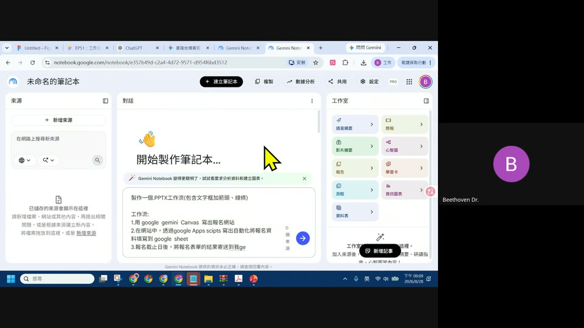
那彙整完我需要去做一些分析，那排位置也可以，然後或者是相關的後續的寄送到我的Gmail，先給他幾個連結，假設這個是我的一個工作流，我想要讓我的流程寫出來，當然這個過程你只要把它貼到這個Google的Jumite。
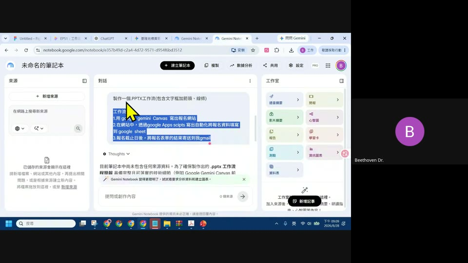
當然這個過程你只要把它貼到這個Google的Jumite，他就會幫你Canvas他就幫你寫出這樣的東西，不過這個不錯我們今天有重點，那他現在要幫我寫，好那因為他還是需要未資料。
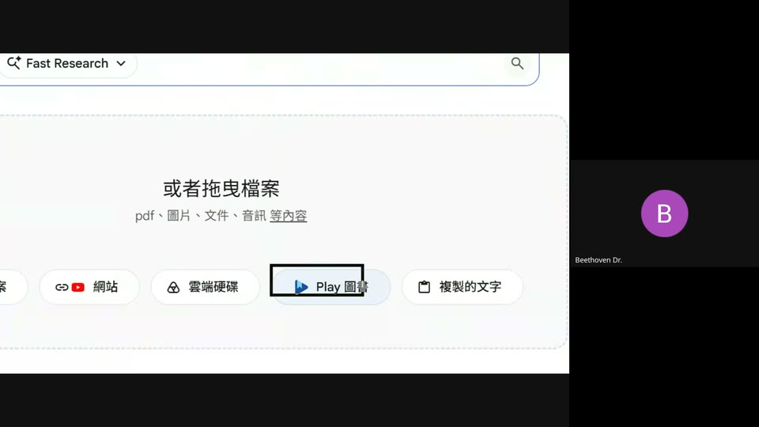
好那因為他還是需要未資料，所以請未點一些資料，好啊這個是今天剛更新的，他其實早期就在透不好意思再補充一下，今天剛更新的是他早期其實就在這邊可以灌電子書了，那他最近也可以直接把Google上面的書籍。
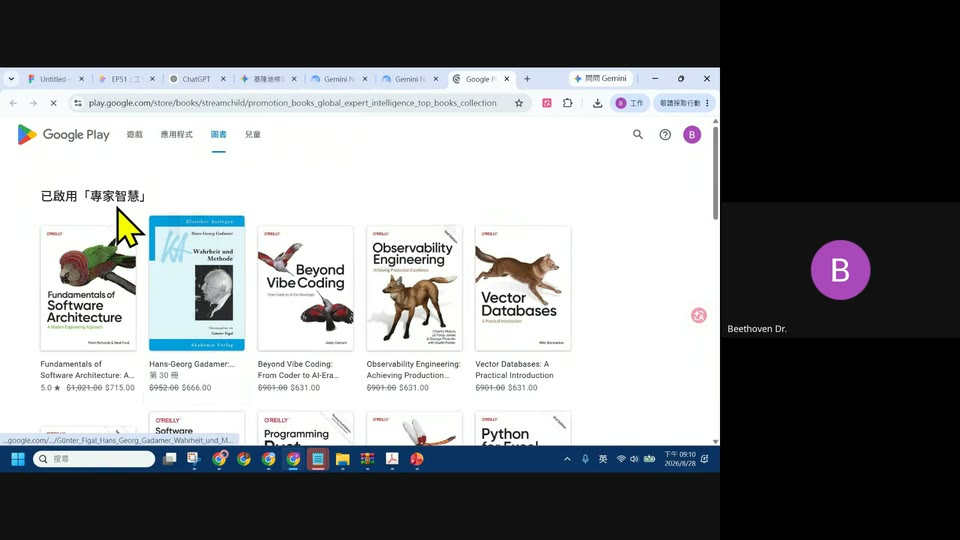
那他最近也可以直接把Google上面的書籍，你在我們Google搜尋的時候不是會有很多的這些Google Play上面的書籍，我想應該你有用Google系統的人應該很熟悉，他這邊書籍都可以直接放進去。
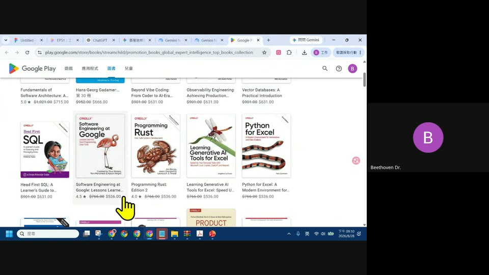
他這邊書籍都可以直接放進去，這個是他的新的一個功能，功能就是可以放整本書了，他可以放整本書了，比如說你對這個在Google裡面的這個軟體的工程怎麼做的，或者是Python for Excel的，你就可以，但是要錢了，他會進去你要購買才能放進去。
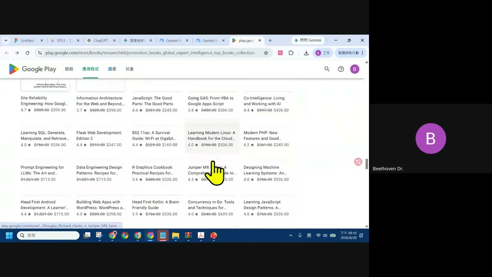
他會進去你要購買才能放進去，所以你可以先找那個免費的，我今天鬧了一眼好像還沒看到免費的，他現在就是會給你收費，好這些都是Google他們自己收集跟他買版權的書籍。
好這些都是Google他們自己收集跟他買版權的書籍，你跟他買的時候你可以會進去，如果目前好像都是以AI為主，就是一些軟體工程，或者是一些數據，當然有些TED上面的這個演講的，如果你有興趣的可以放進去，好這不是重點。
好這不是重點，先回來好，那我先把這些當做我的Database，好了，OK，那就可以做了。
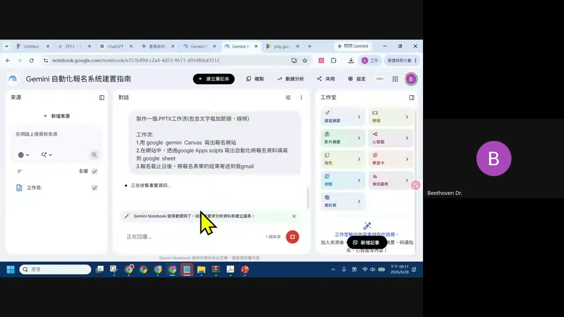
那就可以做了，那他等一下就會在這邊直接幫我做出一個簡報，那你就可以直接做使用跟應用，好這個是一個最簡單做的做法，那我們就不要讓時間去往下走，讓他邊做，他等一下會直接輸出在這裡。
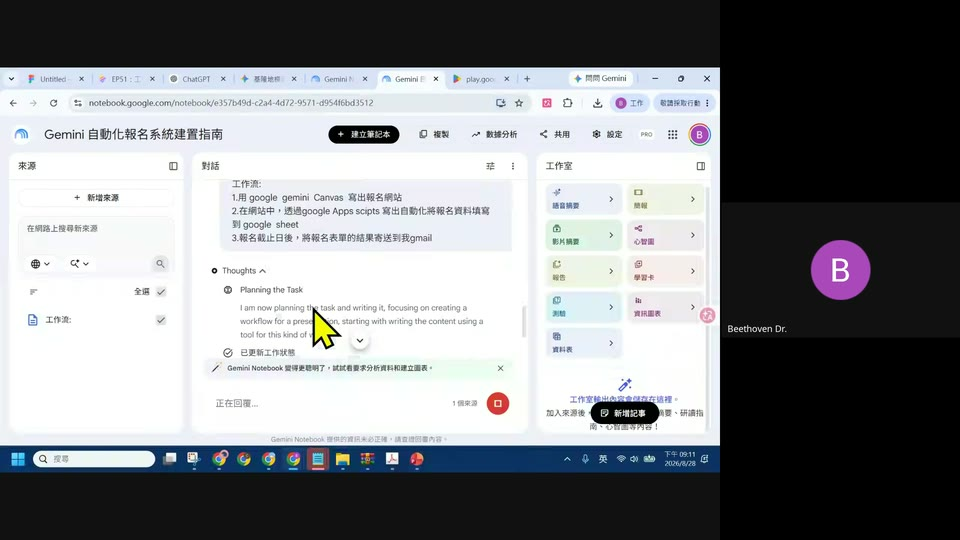
他等一下會直接輸出在這裡，如果大家最近有使用新版的Jumite Notebook，他的狀況就是會寫比較久一點，就是他在處理的狀況會比以前更久，以前他可能很快就出來，他目前都會寫python的方式。
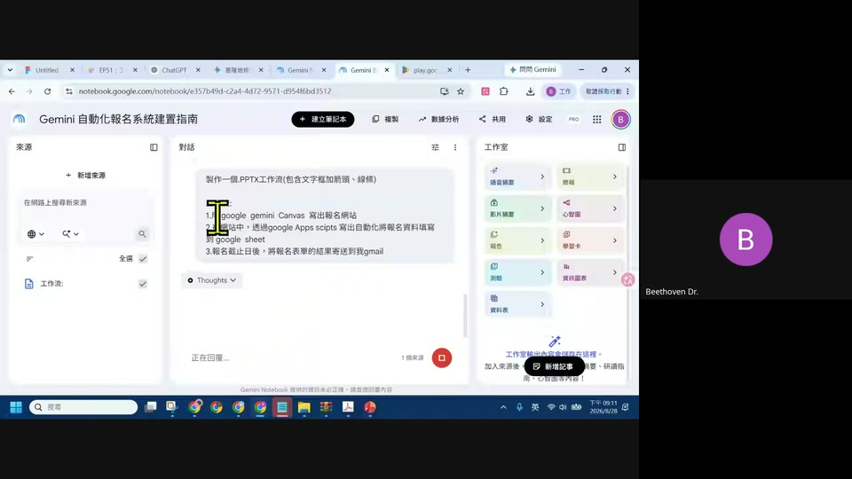
他目前都會寫python的方式，然後去產出我的Data，那等一下他給我一個PVTX，好那這是一種寫出工作流的方式，以前可能要自己畫，現在可以叫他先給你，那他所產生的PVTX是可以做更改跟修正的。
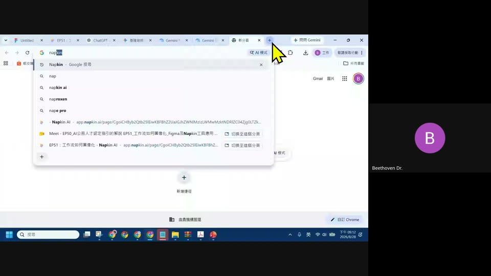
那他所產生的PVTX是可以做更改跟修正的，好下一步，接下來我們要做的事情是，其實這個早期蠻紅的，這個其實跟Gamma是同一個時期的，叫做Nakim，我不知道大家有沒有使用過，那個在簡報裡面這裡。
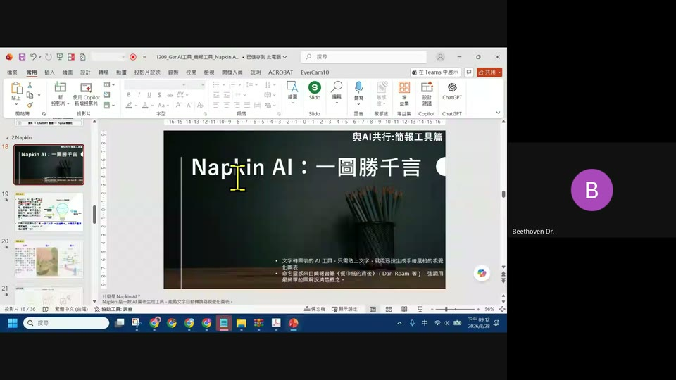
那個在簡報裡面這裡，我先講Nakim，他英文中文叫做餐巾子，餐巾子就是創立這個靈感的人，就是他這個，他意味著就是我要把千言萬語。
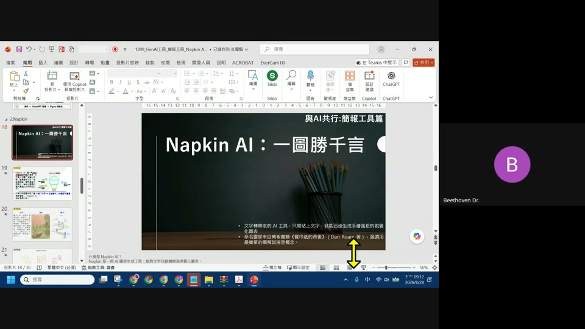
他意味著就是我要把千言萬語，轉換成我要透過在搭電梯的過程中，如果遇到一個有錢的老闆，然後想要希望他贊助我的研究，或贊助我的發展，贊助我的相關的產品，那我就要用千言萬語去告訴他，不能他沒有那麼多時間聽你一隻一隻講。
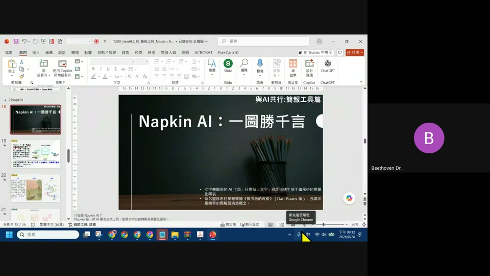
不能他沒有那麼多時間聽你一隻一隻講，他就是要用很快的方式知道你說，你的東西到底特點是什麼，特色是什麼，能夠做到什麼樣的樣子，你就要類似這樣的方式，要把它轉成很簡單的，那早期他其實限制蠻多的。
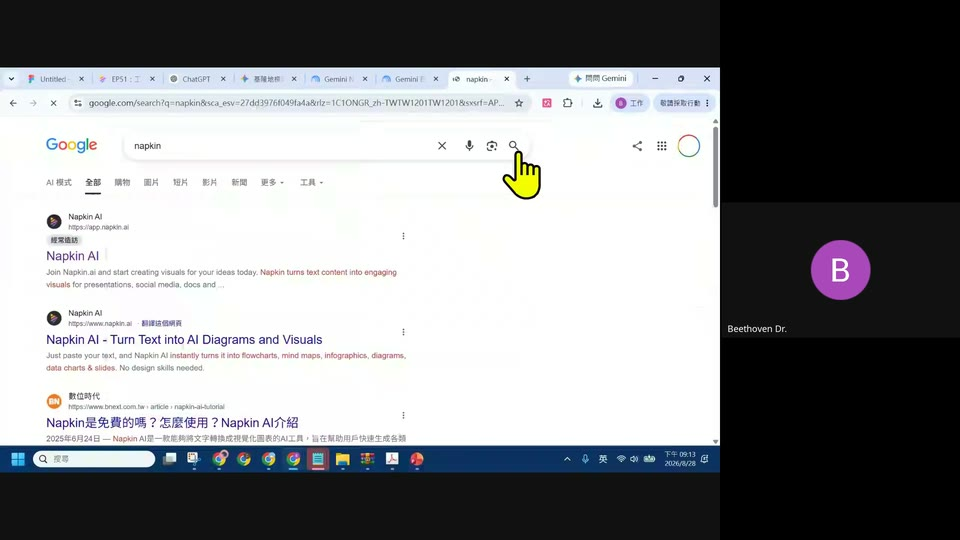
那早期他其實限制蠻多的，就是他可能會有一些使用的次數，那他現在使用次數其實蠻高的，那他也更新了一個功能，他也把簡報加進來，所以你就點Nakim AI，那我就貼給大家好。
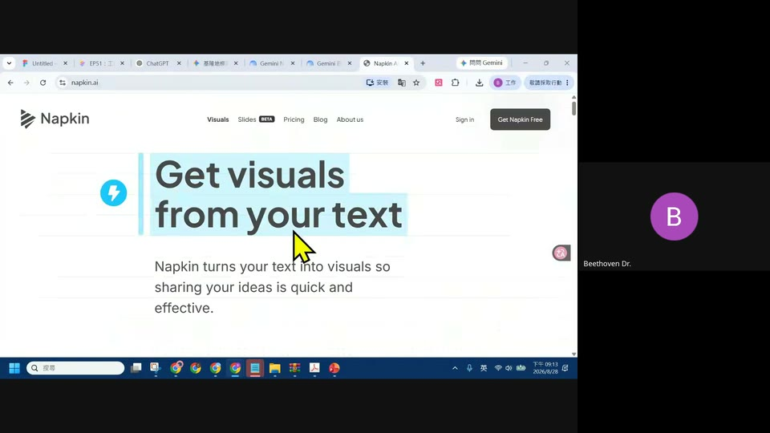
那我就貼給大家好，讓大家自行，我想應該蠻多人都聽過了，因為這個，其實在三年前跟GPT，基本上慢他一點點而已，好，那怎麼使用呢，就點這個，GetNakim Free。
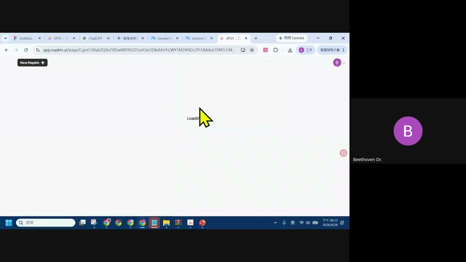
好，好了之後呢，就讓他轉吧，我猜大家第一次加會需要一點時間，你的時間會需要去讓他做登錄，或者是需要去讓他做一些選擇。
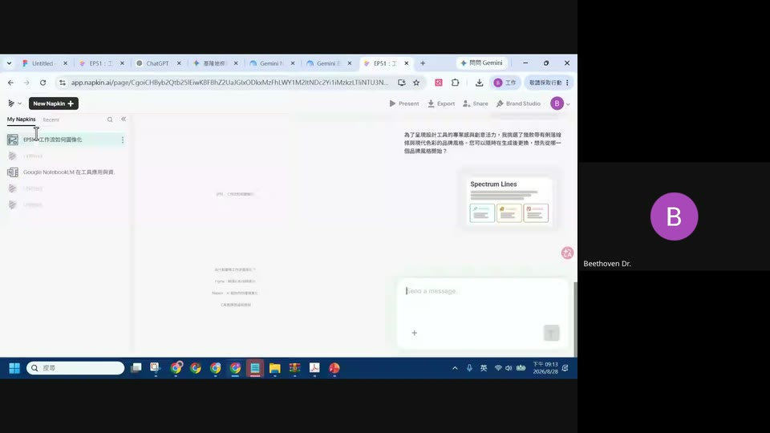
或者是需要去讓他做一些選擇，比如說你登錄之後要選用途，你可以不用理他，好，來，我們先回到他最原始的，我們一個一個來，他有一個缺點就是他每次打開都會存在他上次的地方。
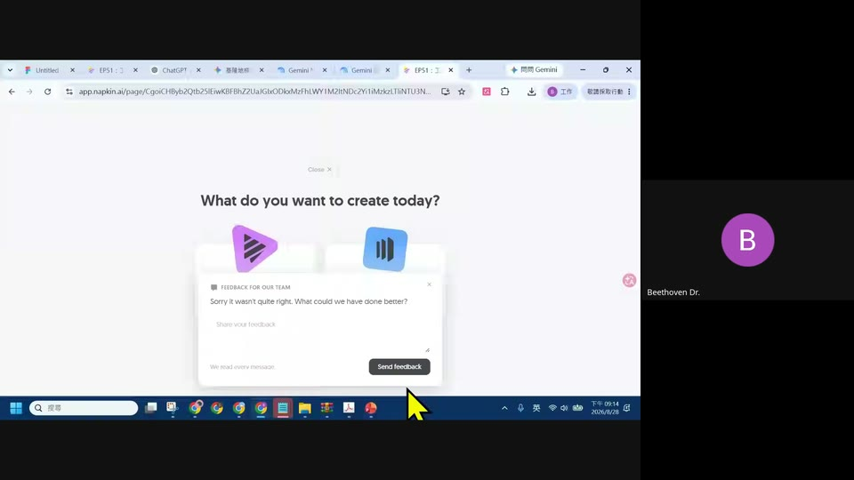
他有一個缺點就是他每次打開都會存在他上次的地方，就是他上最最後一次做在哪裡，好，那我們就進來這裡，正常來說你進來的時候他會進入到這個畫面。
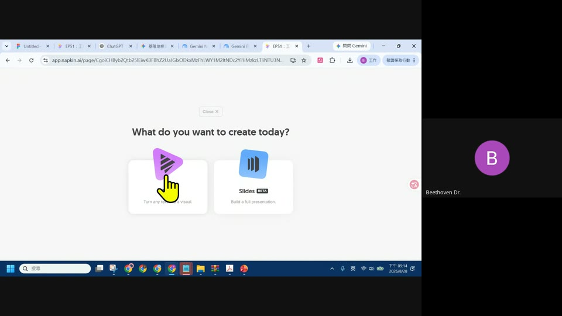
好，那在這個畫面裡面呢，他能做的是第一個，他可以把文字變成視覺化的，那他的這個視覺化有好幾種，比如說可以貼上我給他的一些文字，或者是去描述一些我的想法。
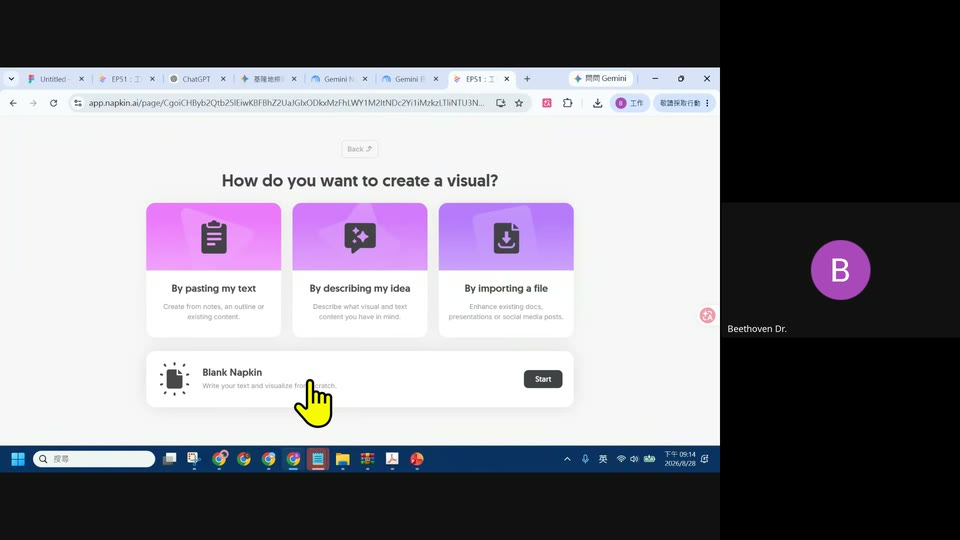
或者是去描述一些我的想法，他會提供給或者是給他一個檔案，或者是給我一個空白的，我慢慢來做建造，那我們舉個例吧，假設這個我想大家應該有。
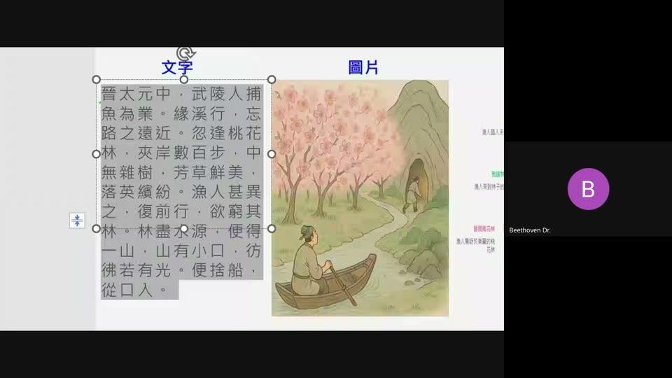
假設這個我想大家應該有，這應該是古中嗎，高中的課文裡面就是那個桃花園記，就是說有個人他划船進去桃花園，然後進入另外一個世界，那我們想要把它變成一張視野圖。
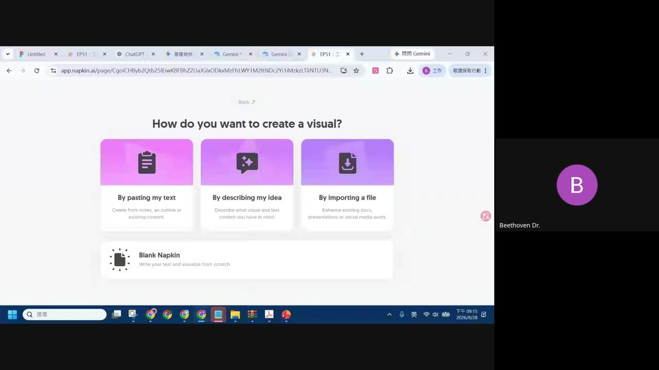
那我們想要把它變成一張視野圖，變成這種圖卡，要怎麼做呢，假設我就複製這個文字，那我一樣提供給大家，大家可以試的去看看，他每個月有兩，每個禮拜有200個星星可以使用。
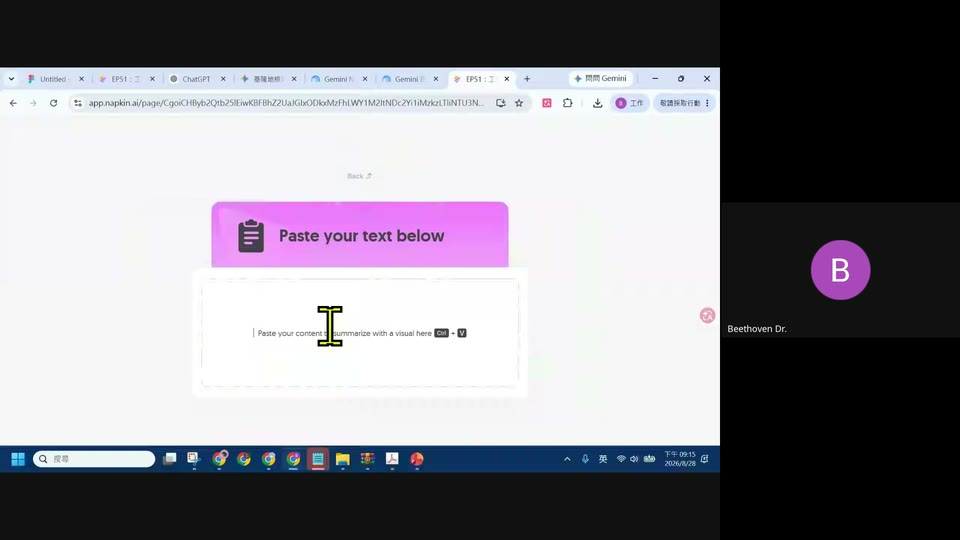
每個禮拜有200個星星可以使用，就是應該是可以做200次左右，第一個，我會直接在這邊貼上我的文字，那貼上之後，非常簡單，他很像筆記本的方式。
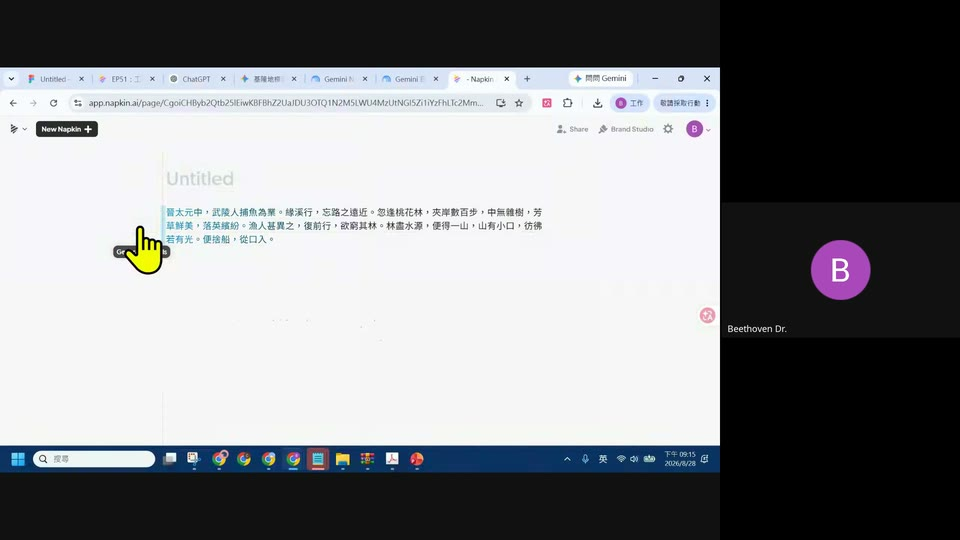
這邊他右下角會有一個儲存，好了之後，這邊有一個閃電，點一下，他會去掃描這些文字之後，把它變成，這些千年萬年比較老口的字。
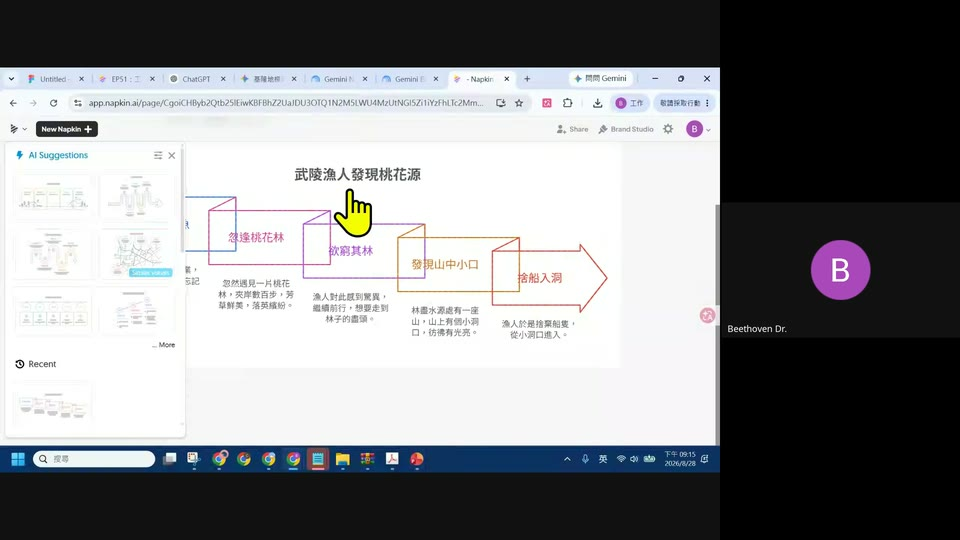
這些千年萬年比較老口的字，然後快速的把它變成類似，我們在PPT裡面常見的Smart Art，比如說為什麼要做這樣，他說我先沿著溪去捕魚，然後突然進去桃花嶺，走到桃花嶺。
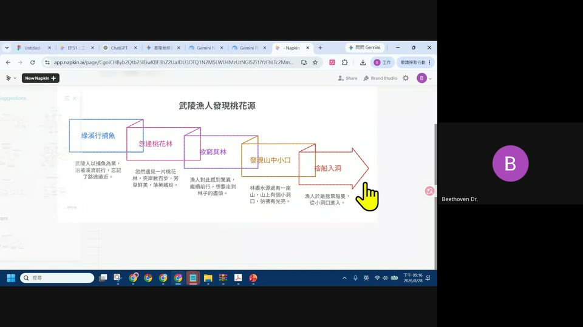
走到桃花嶺，桃花嶺的底的時候發現一個山中小口，然後把船不要放在那邊，然後走進去洞，他就是在形容這個過程，好，這個有什麼好處，來看一下，他可以幫你畫成這樣。
他可以幫你畫成這樣，你可以根據你左邊的AI的建議裡面，比如說這種繪圖的，這種像煽動的，或者你可以再選，他有很多形式，如果這些你都不喜歡，你可以好。
你可以好，假設好了，你可以點夢，他有更多的大概上百種吧，你可以選你要的，你在做比如說，這個就不太合適了，可能跟。
有些太簡單了，下面有很多的類型，比如說你要透過MyMapping的方式，還是要透過流程圖的方式，當然這個我當初都會跟他說，大家用流程圖來畫，不過都學了，他其實有很多更有趣的。
他其實有很多更有趣的，比如說他有更多那種視覺化的，呈現的模式跟邏輯，你可以來看，你可以一直點Mode，他會提供給你更多的建議，好，所以他除了流程之外，其實還有更多的呈現方式。
其實還有更多的呈現方式，包含一般我們常常在呈現的這些圓柄圖，或者是一些這種散步圖，長角圖，對抵圖或者是時間序列的方式，他都可以來做呈現，我先來舉個例，我們就用這個吧，看一下。
看一下，跑出來的，好，假設我們就用火遮頭，這個是他的發現，假設這是給他，我們選完了，然後他這邊有很多的樣式，選一個比較淡的可以調的，這裡，我選這個。
我選這個，選完之後，有幾個好處，第一個是，你覺得他的效果不好，這邊可以再提供一些效果的補強，比如說他可以增強他去畫出來的時候的效果，然後他就要扣。
然後他就要扣，好，他就扣我100個星星，把他畫了，你的效果要呈現的方式，他就重新幫你做視覺化的呈現，當然其他這些小的，比如說要換顏色，或者是字型要換。
或者是字型要換，size，或者是其他的圖形要換，他都有內建的調整功能，好，但是最重要的來了，我除了這些的調整，這些比較偏向於這種，瑣碎的比較簡單的這種，設計的風格之外。
設計的風格之外，最重要的是下載，如果我今天想要把它放在我的簡報，或者是今天我想要放在哪裡的時候，他這邊有提供下載的功能，等他畫完，大家都有跟上嗎，這個應該註冊跟使用都不會太難。
這個應該註冊跟使用都不會太難，有問題可以發問喔，可以在那個旁邊的聊天室。
可以在那個旁邊的聊天室，詢問，OK，我就繼續囉，好，那他改成這種類似便利貼的方式，那我們就按下載。
那我們就按下載，好，那當然，你說老師字可不可以改，當然可以改，欸，他因為改成便利貼了，所以他不能改，早期的就是一開始的最一開始的是可以改的，我把它關掉，這些字是可以改的。
這些字是可以改的，漁夫的發現，改成這個，好，假設，改一下字，澆花圓劑，好像。
（此段沒有字幕）
但是隻能下載三次，他就只能下載三次一個禮拜。
他就只能下載三次一個禮拜，好，他下載下來就可以改，剛剛他已經把它畫成便利貼的，比如說這個模式，他把它下載成便利貼，你就不用下載成PBT了，因為他不能改，但是我試一試給大家看。
但是我試一試給大家看，好，打開之後，所以他樣式很多，你可以把流程告訴他，所以你可以來使用他，這個是他打開之後的模式。
這個是他打開之後的模式，這些字都是可以改的，打開，這些字都可以改，通常這種字很小的問題，你也不用自己改，看你要開Copilot，或者是開GPT。
或者是開GPT，或者是Cloud都可以，你就跟他說，整體的字條大排版，整體，對稱，補合，大小，至少。
至少，24號字，OK，好，然後他就會去幫你做排版，那我們就繼續，那這邊他也下載好了，就是那個便利貼版本的，他也做好了，所以你的簡報的功能，他這邊也可以提供一些寫作。
他這邊也可以提供一些寫作，比如說這裡，我們把剛剛的那個需求，我們剛剛在做，做，JIME來的，這一個，複製，一樣，貼上，給他型號，好。
好，他就根據你的工作流，所以我都會讓他們先用口述的，或者是用講的，你就，任何，你做，這個簡報的功能，他這邊也可以提供一些寫作，比如說這裡，我們把剛剛的那個需求，我們剛剛在做，JIME來的，這一個，這裡，工作流。
工作流，好，一樣，根據我的文件，貼上，給他型號，他就根據你的工作流，所以我都會讓他們先用口述的，或者是用講的，你就，如果你有開那個。
如果你有開那個，Codex，或者是你直接按Windows H，他也可以使用錄音的方式，直接用講的，就是Windows H，好，他就把這個網站開發的過程，直接講出來，你的步驟是什麼。
你的步驟是什麼，那如果你不喜歡，那他有個壞處，如果你遇到這樣的問題，你，我已經生成完了，但是我也不喜歡，來，你就得要再點一次，所以你一開始，你就要鎖定好你的框架。
你就要鎖定好你的框架，比如說我旁邊要怎麼做，比如說我還是喜歡這種，傳統的Smart Art的方式，好，這樣就可以把工作流講清楚，那這邊都可以加字去做處理，然後他可以做。
然後他可以做，Slide，就是所謂的簡報的意思，所以大家也可以使用他來做簡報，比如說你要這種每一課的，或者是訓練的，類似的，他都可以來做，等一下，看一下他的結果。
看一下他的結果，這個是剛剛那個，他渲染過後的長這樣，就是他沒辦法動，只要是渲染過後的，他其實就是用一個模型去畫圖的，他就沒辦法動，然後這個是剛剛GPT幫我們排版的，然後自放大了。
然後自放大了，然後擺版，這邊好像沒排好，他還正在排，那自行是因為我之前就設定他要標凱體，24招式，他就自動去根據我的需求去做排版，好，再往下囉。
再往下囉，這個簡報我就不在這邊示範了，如果你有興趣的人，你就日行來做，把你的Word丟上來，他就自動幫你變成簡報，他目前更新的功能，那怎麼看你有多少容量呢，就在這裡，點開你的帳號，然後進到setting裡面，就可以看到說我現在可以用多少。
就可以看到說我現在可以用多少，比如說我還有148可以用，他是一個一個禮拜可以用的，到31號到禮拜一啦，好，現在可以用多少，我還有148可以用。
我還有148可以用，他是一個一個禮拜可以用的，Code，到31號到禮拜一啦，好，現在可以用到，然後可以用到，到，這個就補充給大家。
這個就補充給大家，我想應該蠻多人知道了，那我們回來看一下Jumran，Jumran做出來了，他的簡報，不是用這個做的，用這裡，用這個做的簡報，沒辦法做修正，但是用這裡下提示詞的。
但是用這裡下提示詞的，他會直接幫你做，看一下，之前都會直接下載，等他一下，OK，打開看一下。
打開看一下，你給把它下載下來，要快，好，這裡的PPT是可以改的，所以，流程拉過來，這邊，就可以去做修正的動作，這裡。
這裡，步驟，Google的Canvas，他可能怎麼用，然後去做處理，你說老師，這個PPT字很小，你在這裡，設定的時候，就可以要求他，生成PPT的時候，至少要24號字體，然後要什麼樣的字型。
然後要什麼樣的字型，他就會盡量滿足你，如果真的不行的話，!，你也不用，太麻煩，你也不要自己調了，就打開GPT，叫他幫你順一順，改一改，他就幫你正常的排版，字型也會變大，而且排版會整齊。
而且排版會整齊，OK，好了，他做完了，排版也排好了，這個是他做的，好，這個就讓大家知道一下，就是如果你要做工作流，他也是一個方式，第二個。
第二個，繼續往下講，Dumar，這個算基本，然後他可以結合你的GPT，在你的POWPOINT裡面去做，也可以用NACAM來做，好，我最後要講的是Figma。
我最後要講的是Figma，Figma，Figma其實很早很早就有了，所以他其實我最早在使用他的時候，我會蠻習慣，不是直接打開他，我會直接在這邊呼叫他，就是。
IG，MA，好，可以呼叫嗎，等一下，先調整一下。
好，等一下，我開另外一個，我的這個，GPT可能沒有一個嗎，我看一下，這裡，我來去，把它叫出來，就是用他 MCP的方式來做。
把它叫出來，我先看一下有沒有連線成功，怎麼看有沒有連線成功呢，打開你的GPT的側邊欄點，外掛插，外掛插程式，那他跟GAMMA一樣跟這個Canva一樣，打開一下Figma，那他可以直接被連線成功。
那他可以直接被連線成功，打開一下Figma，然後按加號，照理說他可以做連線的動作，那我這邊也同時做，就是他外掛程式，!，這邊就手選Figma。
這邊就手選Figma，然後按加號，照理說他可以做連線的動作，那我這邊也同時做，就是他外掛程式。
這邊就手選Figma，那他是一套這個比較偏向，我已經連線了，你就有同一個帳號就可以使用，好，來稍微介紹一下，因為這套我不知道大家熟不熟。
因為這套我不知道大家熟不熟，可能偏設計類的大家會比較熟，原則上他在做什麼呢，他是做一套這個視覺化工具的，那他裡面有內建幾個，或者是他Slide，或者是他的白板，都蠻多人用的，還有他的相關上個月剛推出的。
還有他的相關上個月剛推出的，SlideGEN的功能也蠻方便的，那他可以是介於，PowerPoint跟Illustrator，還有流程化工具裡面的一個，蠻好用的一個免費的工具，基本上他免費版就非常非常好用的。
基本上他免費版就非常非常好用的，你就說老實我家付費，他其實免費版就堪用了，你要做流程或者是要做視覺化，甚至要請他做簡報都非常的方便，那他當然有一些，這個相關的動態的動畫的，還有他相關的功能。
還有他相關的功能，我最常用的就是白板，就是他的BigGEN裡面，還有他Slide，還有他的Design，都不可能是我蠻常使用的，好那我們來打開吧，我通常會在這邊，直接把他叫出來，比如說Figma叫他出來。
比如說Figma叫他出來，然後叫他做事情，我就一樣，我們就用剛剛的指令，我去找一下，指令，我就給他，好，剛剛，斷掉了指令。
斷掉了指令，好，那我去找一下。
好，好去做一下他的指令。
好，然後我來做一下，好像，細細細細細細細細細細細細細細細細細細細細細細細細細細細細細細細細細細細細細細細細細細細細細細細細細細細細細細細細細細細細細細細細細細細細細細細細細細細細細細細細細細細細細細細細細細細細細細細細細細細細細細細細細細細細細細細細細細細細細細細細細細細細細細細細細細細細細細細細細細細細細細細細細細細細細細細細細細細細細細細細細細細細細細細細細細細細細細細細細細細細細細細細細細細細細細細細細細細細細細細細細細細細細細細細細細細細細細細細細細細細細細細。
細細細細細細細細細細細細細細細細細細細細細細細細細細細細細細細細細細細細細細細細細細細細細細細細細細細細細細細細細細細細細細細細細細細細細細細細細細細細細細細細細細細細細細細細細細細細細細細細細細細細細細細細細細細細細細細細細細細細細細細細細細細細細細細細細細細細細細細細細細細細細細細細細細細細細細細細細細細細細細細細細細細細細細細細細細細細細細細細細細細細細細細細細細細細細細細細細細細細細細細細細細細細細細細細細細細細細細細細細細細細細細細。
細細細細細細細細細細細細細細細細細細細細細細細細細細細細細細細細細細細細細細細細細細細細細細細細細細細細細細細細細細細細細細細細細細細細細細細細細細細細細細細細細細細細細細細細細細細細細細細細細細細細細細細細細細細細細細細細細細細細細細細細細細細細細細細細細細細細細細細細細細細細細細細細細細細細細細細細細細細細細細細細細細細細細細細細細細細細細細細細細細細細細細細細細細細細細細細細細細細細細細細細細細細細細細細細細細細細細細細細細細細細細細細，他就用一個白板，他那個Figma裡面的那個白板長這樣。
他那個Figma裡面的那個白板長這樣，給大家看一下他的界面長這樣，你登錄之後他的畫面長這樣，然後他的，旁邊就是他的相關的這些草稿，或者是他的資料夾，右上角就是他相關的功能。
右上角就是他相關的功能，他有這個design或者是他的這個白板，還有他的slide還有換燈片還有更多的，他要做簡報的或者是做白板的，那我們先開這個FigJet，這個是他的這個白板，那在這裡面我通常會他有些範本，他會教你你剛進來他會教你怎麼做。
他會教你你剛進來他會教你怎麼做，甚至他有這個agent可以在旁邊幫你，那通常我們都是，如果要做腦力機大，或者是大家做討論的時候，我就會說那就開一個這個你要做筆記的話，這邊可以提供一些相關的筆記的內容。
這邊可以提供一些相關的筆記的內容，比如說在做這種公民會議，做討論的時候可以用這個方式來做，那就給你這些相關的工具，然後你要做流程圖，你也可以在這邊慢慢的畫，然後這邊他有提供給你一些流程圖的sample，這邊有一些相關的圖形可以去做使用。
這邊有一些相關的圖形可以去做使用，他有非常非常多的外掛可以去做登錄的使用，好，這都不是我的重點，因為自己畫很慢，所以我就說那就請你幫我做吧，那就開GPT的work，他就其實不用到work了。
他就其實不用到work了，一般的版本就可以用，一般的版本就可以直接叫他做，他說他已經完成了，那你就開啟，好，然後他就把Jumina的Canvas。
然後他就把Jumina的Canvas，就是剛剛我講的相關的過程，第一個建立報名的階段，比如說打開，這裡，然後用Canvas，中間是不是就可以加這裡，我剛剛說藍字可以加上。
我剛剛說藍字可以加上，這個誰做，藍色的字，這邊可以去選擇他的顏色，藍色是誰做，然後紅色是哪些機器。
然後紅色是哪些機器，哪些軟體，然後自動化怎麼做，好，這邊他就幫你畫出來了，所以你就可以快速的去做整合，就等於說請GPT幫你先做一次，你就不用花那麼多的心力來做。
你就不用花那麼多的心力來做，好，再做一次，也不用到work了，我記得到對話就可以了，直接說，他就會做，其實這早期就可以了，還沒有agent之前就可以做了，所以如果你有常使用 BigModal。
所以如果你有常使用 BigModal，其實他蠻多功能都可以在這邊做的，包含他的自動化，好，當然今天應該沒那麼多時間可以講到他的一些，我頂多就講他的自動，AI agent。
AI agent，這裡，他的Design裡面通常，在這裡，他點進來之後，這個跟剛剛不太一樣，這邊有點像是要打造一個，你要根據他的模式，比如說我要根據他是一個圖片呢。
比如說我要根據他是一個圖片呢，還是他是相關的功能呢，他可以在這邊去做一些選擇，然後假設我都會開agent，請他來幫我，告訴他我今天想要打造一個，簡易的。
簡易的，購物網站，雛形，好，既然他有agent，你就可以跟他用聊的方式，他就會一一的幫你去打造，他就是早期比較多人在使用UIUX的工具。
好，這個就提供給大家，如果大家有興趣可以來這邊看，他其實非常非常多的功能，如果你早期是在做設計類的，你應該對他不會太陌生。
你應該對他不會太陌生，好，那這些我就提供給有訂閱的，如果你有想要看的，我這邊都寫得很清楚了，你就可以來這邊看，他外掛可以做到什麼程式呢，基本上白板，簡報，Design，還有他的Potato Type，這是他們網站的渲染的動畫功能。
這是他們網站的渲染的動畫功能，他也可以做，他有些佔負資源，你就打開你的Podest，請他幫你連，Codex可以直接連Vigma幫你做到後續，這些他沒辦法做的事情，好。
好，原則上今天就比較快速的講到這邊，就是第一個講了Nakin，然後也講了Vigma，那當然有一些比較細的Vigma非常多，然後一節課講不完，只是我先跟大家講，我有時候在畫他的這個流程圖的時候。
我有時候在畫他的這個流程圖的時候，我還蠻常請大家就打開Vigma，然後來做相關的使用，那其實蠻方便的，那甚至就請AI幫你做了，你就快速的去製作了，OK。
OK，好，那我們今天的分享原則上就先到這，不知道大家有沒有什麼問題，如果沒有就到這，下禮拜，下禮拜可能會講Agent。
下禮拜可能會講Agent，你就很久沒有講Agent了，下禮拜可以講一下，OpenCode好了，下禮拜再來公佈，看要講哪一個Agent，好，希望大家今天一個小時的課程裡面。
希望大家今天一個小時的課程裡面，我通過比較快，所以希望大家有一些收穫，那最近應該會開課了，如果大家有興趣，我再請小幫助幫我貼，明天我把課程稍微抓一下，右腳的。
右腳的，然後統計的，然後研究的，然後看PowerToMate有沒有要開，大概這樣，好，如果你是第一次聽的，記得加入我們的LINE的官方社群。
記得加入我們的LINE的官方社群，好，那如果沒意外，我們今天課程就到這邊，謝謝大家參與，很謝謝大家，如果有想問問題的就留下來，沒有就。